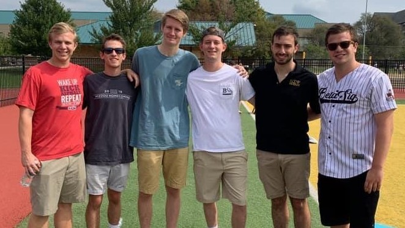
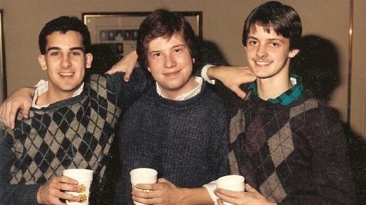

About

Spiritual

Scholastic

Social
The Iota Chapter of Beta Sigma Psi is a diverse group
of men that is always looking to exceed expectations
and grow more influence on the University of Missouri
campus. We take pride in having a wide range of men in
this fraternity, and our overall goal is to spread the
values bestowed in us by former members and in our national
and chapter constitutions. We are open to any and all men on
the University of Missouri that are willing to uphold and add
to our values as a fraternity. We hope to continue to grow in
size and in our influence across campus. We encourage our
Associate Members to become members of other organizations that
could extend our reach and help spread our values. We are wholly
committed to the scholastic implications that come with being a full
time University student, and it is our goal as a fraternity to help
our associate and active members succeed in their given academic
fields. We also enjoy taking part in in all social aspects of college life
and campus life, including independent socials, and participating
in the University of Missouri Homecoming and Greek Week. Lastly,
our fraternity has an ongoing commitment with servicing the
University and the Columbia community at large through philanthropic
acts and events. We strongly encourage our members to only champion
these values, but be living examples of our ideals

3.2+
Average GPA

30+
Active Members

800+
Alumni